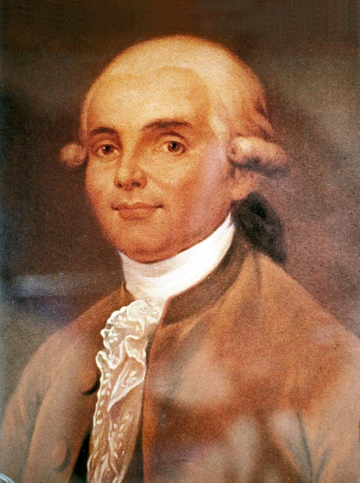

Dos hombres cruzan el cielo de París en el globo de los Montgolfier
El físico Pilâtre de Rozier y el marqués de Arlandes volaron durante veinticinco minutos sobre la ciudad en una máquina de papel y tela alzada por aire caliente, ante el rey y una muchedumbre inmensa. Cinco mil años envidió el hombre a los pájaros; esta tarde saldó la deuda.

A las dos menos siete minutos de esta tarde, desde los jardines del castillo de la Muette, se elevó por los aires una máquina magnífica, azul y oro, alta como una torre de siete pisos, llevando en su galería a dos hombres vivos: el físico Jean-François Pilâtre de Rozier y el marqués de Arlandes, mayor de infantería. No iba atada a cuerda alguna, como en los ensayos: subió libre, con el viento por todo camino. París entero estaba en los tejados. La máquina cruzó el Sena, pasó sobre las Tullerías saludada por un clamor que corría con ella, y al cabo de veinticinco minutos bajó mansamente del otro lado de la ciudad, entre los molinos de la Butte-aux-Cailles.
El artificio es invención de los hermanos Montgolfier, fabricantes de papel de Annonay, que descubrieron que el aire calentado por un fuego de paja empuja hacia arriba con fuerza bastante para llevar un lienzo, luego un globo, luego lo que se quiera. En junio asombraron a su provincia; en septiembre, a Versalles, donde hicieron volar ante el rey una cesta con un carnero, un pato y un gallo, que volvieron a tierra sanos, para probar que allá arriba se respira. El rey Luis XVI, cauteloso, propuso que los primeros hombres del aire fueran dos condenados a muerte; Pilâtre de Rozier protestó que gloria semejante no podía regalarse a criminales, y la reclamó para sí.
No vuela solamente el aire caliente: hace tres meses, el sabio Charles soltó en el Campo de Marte un globo menor hinchado con ese aire inflamable que se saca del hierro y el vitriolo, y que fue a caer en la aldea de Gonesse, donde los campesinos, tomándolo por un monstruo llovido del cielo, lo remataron a horquilla y perdigones. Entre ambas escuelas, la del fuego y la del gas, hay ya rivalidad declarada, apuestas cruzadas y memoriales ante la Academia de Ciencias. Lo de hoy da la delantera a los Montgolfier, pero se anuncia para dentro de unos días el vuelo del propio Charles en globo de gas, y París, que de todo hace moda, no habla de otra cosa.
El marqués de Arlandes ha contado ya la travesía: que iba tan ocupado mirando París que su compañero hubo de reñirle a gritos para que atizara el fuego, pues el globo bajaba; que las chispas del brasero abrían agujeros en la tela, que él iba tapando con una esponja mojada; y que desde la galería saludaban con el sombrero a la muchedumbre. Entre los testigos ilustres estaba el señor Franklin, ministro de los Estados Unidos de América, a quien alguien preguntó de qué servía semejante invento. «¿De qué sirve un niño recién nacido?», habría respondido el americano, que tiene fama de contestar así.
Los sabios discuten ya los empleos del prodigio: unos hablan de reconocer los ejércitos enemigos desde lo alto, otros de cruzar los mares, otros de mero espectáculo de feria. Puede que todos acierten. Este diario prefiere anotar lo esencial: que desde esta tarde el cielo dejó de ser techo y es camino, y que dos hombres han visto París como hasta hoy sólo la veían las palomas. Quede para los años venideros juzgar adónde llevará el aire a los hijos de este niño recién nacido; por lo pronto, ha nacido, y ha nacido en Francia.